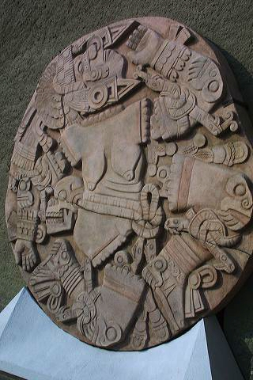

Obreros de la luz desentierran a la diosa Coyolxauhqui al pie del Templo Mayor
Una cuadrilla que cavaba una zanja en la esquina de Guatemala y Argentina dio con un monolito circular de más de tres metros: la diosa lunar desmembrada de los mexicas. Los arqueólogos hablan ya de excavar manzanas enteras del centro. La ciudad antigua asoma bajo la moderna.

Esta madrugada, una cuadrilla de obreros de la Compañía de Luz y Fuerza que cavaba una zanja para cables en la esquina de las calles de Guatemala y Argentina, a espaldas de la Catedral, sintió que la herramienta daba contra una piedra distinta de las demás. Al retirar la tierra apareció un relieve: un rostro de perfil, con cascabeles labrados en la mejilla. Los trabajos se detuvieron y se dio aviso a los arqueólogos. Lo que comenzó a emerger entonces, bajo los cables y los tubos del subsuelo, es un monolito circular de más de tres metros de diámetro, con una figura de mujer desmembrada tallada en la piedra.
Los especialistas del Instituto Nacional de Antropología e Historia que acudieron al lugar identifican la figura como Coyolxauhqui, la diosa lunar de los mexicas, hermana de Huitzilopochtli. El mito la cuenta vencida y desmembrada por su hermano en el cerro de Coatepec, y así aparece en la piedra: la cabeza y los miembros separados del torso, ceñida de serpientes, con los cascabeles en las mejillas que le dan nombre. La talla, dicen los que saben, es magistral. Su ubicación importa tanto como su belleza: la diosa yacía al pie de lo que fue el Templo Mayor de Tenochtitlan, tal como el relato la ponía al pie del templo de su hermano.
El hallazgo confirma lo que los estudiosos sospechaban desde hace décadas: que el Templo Mayor no está bajo la Catedral, sino en la manzana vecina, donde Leopoldo Batres y después Manuel Gamio ya habían tocado sus esquinas a principios de siglo. La ciudad moderna se levantó literalmente sobre la ciudad vencida: los palacios coloniales se construyeron con las piedras de los templos y encima de ellos. Cada obra de drenaje, cada cimiento, ha ido devolviendo ídolos y ofrendas sueltas. Esta vez la casualidad de una zanja eléctrica ha hecho lo que ningún proyecto había logrado: poner a la vista, intacta y en su sitio, una pieza mayor del recinto sagrado.
En la esquina, acordonada desde temprano, se juntaron hoy oficinistas, boleros y vecinos del rumbo, que se asoman a la zanja como a un pozo del tiempo. Los obreros que dieron el golpe de suerte repiten su relato a quien quiera oírlo, con el orgullo del caso. El arqueólogo Eduardo Matos Moctezuma y sus colegas hablan ya de un proyecto en forma: excavar manzanas enteras del centro para rescatar el templo doble de Tláloc y Huitzilopochtli, aunque ello obligue a demoler edificios y a discutir con la ciudad viva cuánta ciudad muerta quiere ver. La decisión, se dice, llegará hasta el escritorio del presidente.
Hay ciudades que guardan su pasado en museos; la nuestra lo pisa todos los días. La capital fundada sobre el lago, aquel islote del águila y el nopal cuya fundación contó este diario en 1325, sigue ahí abajo, dormida bajo el asfalto, y de cuando en cuando saca una mano de piedra para recordárnoslo. La diosa desmembrada vuelve a mirar el cielo después de casi quinientos años de tinieblas. Habrá que decidir ahora cuánto estamos dispuestos a excavar y qué haremos con lo que aparezca, porque en México, ya se ve, basta abrir una zanja para que la historia entera se asome por el hueco.